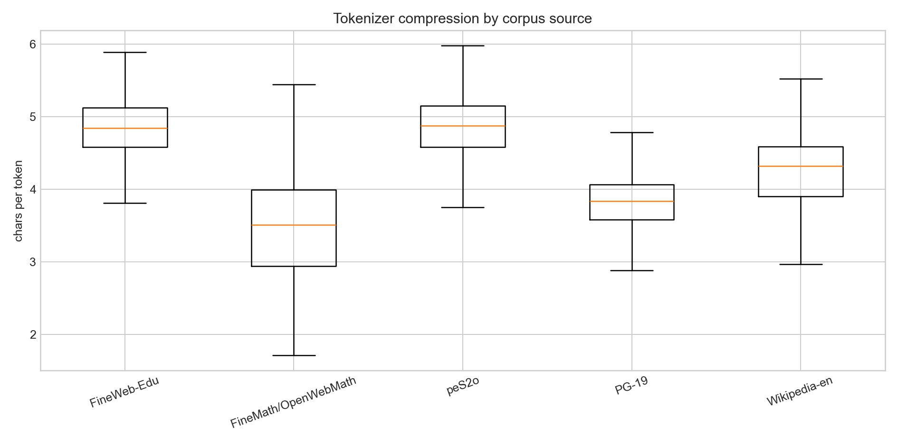
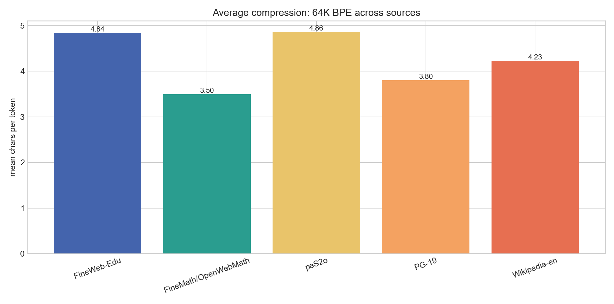
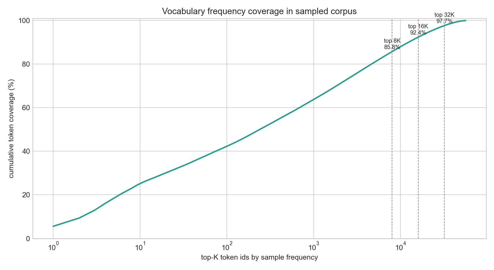
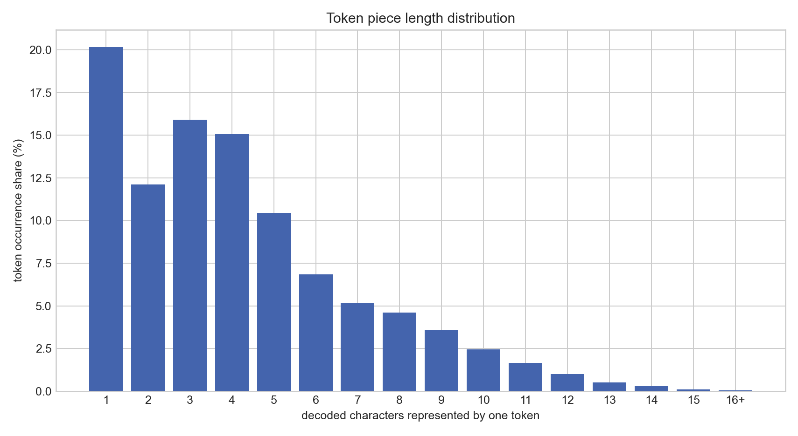

Qwen3 0.1B 64K BPE Tokenizer Sampling Check
Sample: 2500 docs, 12,992,641 chars, 3,099,665 tokens from 5 corpus families.
Vocab size64,000
Sample vocab used56,107 (87.7%)
Global chars/token4.19
UNK rate0.0000%
Source Metrics
| source | docs | tokens | mean chars/token | median chars/token | UNK | single-char token | unique ids | vocab used |
|---|
| FineWeb-Edu | 500 | 387,698 | 4.84 | 4.85 | 0.0000% | 14.45% | 28,439 | 44.4% |
| FineMath/OpenWebMath | 500 | 515,909 | 3.50 | 3.51 | 0.0000% | 29.71% | 20,887 | 32.6% |
| peS2o | 500 | 815,326 | 4.86 | 4.87 | 0.0000% | 14.75% | 32,433 | 50.7% |
| PG-19 | 500 | 1,057,513 | 3.80 | 3.84 | 0.0000% | 22.41% | 35,910 | 56.1% |
| Wikipedia-en | 500 | 323,219 | 4.23 | 4.32 | 0.0000% | 18.17% | 26,289 | 41.1% |
Plots




Top-K Coverage
| top 1000 | 63.79% |
| top 4000 | 78.46% |
| top 8000 | 85.77% |
| top 16000 | 92.40% |
| top 32000 | 97.69% |
| top 48000 | 99.66% |
| top 64000 | 100.00% |
Tokenization Samples
FineWeb-Edu
133114787 –1219 15370 The8337 seat281 of2973 action16,266 the7462 agent16,266 the7760 instrument16,266 the860 many867 different6702 kinds281 of5450 actions16,293 and266 the8595 fifth16,266 the543 will18.2531 No2635 matter798 what2973 action534 one7316 undert1334akes353 with1625 body16,5694 speech385 or2305 mind16,2078 whether6277 usual385 or10437 unusual16,705 these371 are266 the2143 five3813 components281 of2973 action18.203\n2282“19615Whether6277 usual385 or10437 unusual1791.”6424 Us718ual385 or10437 unusual609 also1584 means2037 ‘19978proper482’385 or2037 ‘316im19978proper8797’.831 He313 is4516 saying339 that798 what831 He313 is4306 teaching1323 here9740 applies296 to2973 action16,9245 regardless281 of2078 whether354 an775 act313 is1042 right385 or3812 wrong16,1433 proper385 or17426 improper16,385 or6476 understood329 for798 what367 it313 is385 or432 not18.519 In589 other2031 words16,445 this313 is12910 solely686 about334 A9031CTION2631 itself293 and677 its2143 five24025 constituents18.203\n2282“3598With1625 body16,5694 speech385 or2305 mind755”25352 reminds469 us339 that2973 action3294 takes1383 place353 with266 the2305 mind16,266 the1625 body16,293 and266 the9358 emotions293 and5694 speech18.203\n453The12482 Five37591 Components281 of15503 Action203\n453The8337 seat281 of2973 action330 (351ad6770hi45363ṣ76h40026ṭ76h10999ā2756na16,2037 ‘5453standing401 at
FineMath/OpenWebMath
7#4542 Step17-1697by17-7737step5938 Solution203\n203\n491##63672 Integrate672 x66^23317-22292x424 from588 -211296 to357 2203\n203\n8875Go203\n211203\n222203\n233203\n244203\n255203\n266203\n277203\n288203\n299203\n200203\n92x203\n93y203\n12(24597�124�13)203\n24597�124�19/24597�124�203\n222203\n203\n73e203\n3583π203\n6540ln203\n4902log203\n3191lim203\n72d19/4981dx203\n51725Dx203\n34>203\n32<203\n31766>=203\n22556<=203\n2776sin203\n2371cos203\n6188tan203\n11351cot203\n2955sec203\n26271csc203\n203\n25841asin203\n414ac392os203\n23223atan203\n414ac320ot203\n298as506ec203\n414ac1391sc203\n203\n19792sinh203\n20199cosh203\n48113tanh203\n71c774oth203\n323se336ch203\n12871cs336ch203\n203\n298as16824inh203\n414ac5966osh203\n23223atan76h203\n414ac774oth203\n548ase336ch203\n414ac16640sch203\n203\n940###34094 Videos203\n203\n8$20018.2883758$203\n203\n491##4542 Step17-1697by17-7737step6190 explanation203\n203\n10646Problem296 to2648 solve30:203\n203\n2912$\
peS2o
61126Integration281 of13150 Multiple62879 Spectral35489 Indices293 and263 a33800 Neural9300 Network329 for20185 Burn282ed6514 Area37999 Mapping8254 Based337 on27957 MODIS4962 Data203\n203\n30:3216 Since3517 wild13093fi382res452 have5598 occurred5269 frequently287 in3382 recent984 years16,5558 accurate12490 burned1356 area8814 mapping313 is2434 required329 for3517 wild13093fi265re9427 severity5197 assessment293 and12490 burned1630 land12227 reconstruction18.36216 Satellite8044 remote19017 sensing313 is354 an2817 effective2669 technology339 that444 can2010 provide6861 valuable1305 information329 for3517 wild13093fi265re5197 assessment18.1532 However16,266 the1419 common5105 approaches1467 based337 on893 using263 a1876 single8973 satellite3015 image296 to20843 promptly4706 detect266 the12490 burned2335 areas452 have1450 low5177 accuracy293 and3644 limited26900 applicability18.723 This2169 paper14786 develops263 a844 new12490 burned1356 area8814 mapping1144 method339 that27800 surpass277es266 the5221 detection5177 accuracy281 of1860 previous2389 methods16,1123 while1403 still893 using263 a1876 single57109 Moderate24397 Resolution27396 Imaging16836 Spect2217ror14607adi6103ometer330 (39528MOD2435IS13)10201 sensor3015 image18.370 The2421 key8026 innovation313 is15844 integrating5551 optimal10721 spectral12307 indices293 and263 a10167 neural2861 network3265 algorithm18.909 We779 used266 the4255 traditional11198 empirical2416 formula1144 method16,2477 multi17-46672threshold1144 method293 and3970 visual8005 interpretation1144 method296 to4316 extract266 the2336 sample3920 sets281 of13962 fi307ve6042 typical2429 types330 (13843burn282ed1356 area16,11949 vegetation16,6193 cloud16,9038 bare
PG-19
41E17-2289text4956 prepared386 by29749 Suz28695anne22268 Shell16,4505 Mary362 M1205ee5879han16,293 and266 the6372 Project26404 Gutenberg203\n26527Online36011 Distributed51577 Proofreading9811 Team330 (7350http2581://4062www18.45746pgdp18.6565net13)424 from3462 page203\n28321images36357 generously1047 made2131 available386 by6484 Internet22215 Archive19/5127American36112 Libraries203\n12(7350http2581://4062www18.34496archive18.2919org19/54498details19/15079amer294ic3334ana13)203\n203\n6302Note30:19070 Images281 of266 the2570 original5502 pages371 are2131 available866 through203\n24469Internet22215 Archive19/5127American36112 Libraries18.5596 See203\n7350http2581://4062www18.34496archive18.2919org19/54498details19/653the39787furn587ace4210081m23748aca203\n203\n6447THE57555 FU4670RNA5783CE203\n203\n1697by203\n203\n54R18.23304 MAC37A6145UL29679AY203\n203\n13920Author281 of1094 '23887Abb1639ots6576 Ver2592ney11'203\n203\n11594London203\n6970John14573 Murray16,16057 Alb53044emar297le5619 Street16,412 W18.203\n422891907203\n203\n11245TO3909 THE203\n53846OTHER49264 CIT25020IZ20291ENS3993 OF332 S2447AN6728TA26965 CAT1518ER42836INA16,203\n58V26326ARA62Z22819ZE16,203\n26949WHO16,5700 AT57896 PRES6031ENT10510 SC1662AT5198TER3232ED41908 LAB2191OR44213IOUS18512LY37272 OVER203\n
Wikipedia-en
61337Nik18515las49762 Hog1172ner330 (3414born3381 293373 September11265 1984287 in17382 Link6360ö6332ping16,11845 Sweden13)313 is263 a15252 Swedish3009 figure44441 skater18.18882 Until5173 200316,375 he20660 competed349 as263 a18816 singles44441 skater16,8355 winning1424 four15252 Swedish18346 junior2911 national14824 titles293 and15147 competing401 at266 the2608 World15613 Junior2121 Figure59394 Skating14279 Championships18.203\n203\n2258He20617 switched296 to4029 pair46750 skating16,2233 team290ing616 up353 with8225 partner8485 Angel11284ika365 P1482yl79k1784ina287 in5173 200318.1320 They486 were266 the742 first15252 Swedish5823 pairs2233 team296 to16994 compete22474 internationally1522 since14610 196218.1320 They5549 twice3632 placed584 5373th401 at266 the2608 World15613 Junior14279 Championships293 and3220 won1017 three14124 bronze28872 medals337 on266 the15613 Junior7303 Grand22763 Prix4083 circuit18.1320 They3220 won266 the14124 bronze10779 medal401 at266 the3657 200616650 Neb347el34428horn42218 Trophy293 and3220 won266 the35379 Nordic14279 Championships18.1320 They7851 ended531 their14857 partnership287 in3413 200718.203\n203\n2742Pro31866grams203\n12(2293with365 P1482yl79k1784ina13)203\n203\n11440Results203\n203\n52P1053air46750 skating353 with365 P1482yl79k1784ina203\n203\n32066Single46750 skating203\n203\n2062References203\n203\n3779External2945 links203\n203\n2190919845115 births203\n8201Living881 people203\n28428Sportspeople424 from17382 Link6360ö6332ping203\n